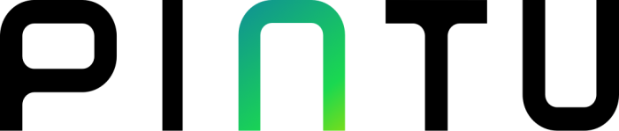
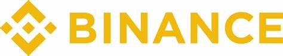

Mau Kaya!Yaa Investasi
Investasi?Ya ke Kripto
Apa Itu Kripto?
Kripto adalah mata uang digital. Kripto itu sendiri berasal dari kata “Crypto” yang merupakan singkatan dari kata “Cryptocurrency”. Ibarat nama panggilan, orang Indonesia lebih suka memanggilnya dengan nama Kripto.Lebih singkat dan mudah untuk diucapkan.
You Should Know!!!
Crypto
Crypto adalah mata uang digital dan merupakan terobosan baru dalam dunia teknologi. Crypto dapat digunakan sebagai investasi karena diperkirakan harganya akan naik dalam beberapa tahun ke depan Crypto berjalan di jaringan komputer yang disebut blokchain, blockchain seperti buku akun raksasa yang mencatat semua transaksi kripto di seluruh dunia.
What Platforms Of Crypto?
Platforms Of Crypto
Ada beberapa Platforms Untuk Bermain Kripto yaitu Seperti Indodax,Pintu,Binance dan masih Banyak lagi, Dalam Bermain Kripto Kita Perlu Mengetahui Pola Dan Harus Bisa Menganalisis Pola Pola Yang ada dalam Market Kripto, Karena Harganya Yang Fluktuatif Maka Harus Berhati hati dalam Mentrading Kripto


Copyright 2022. RynRf_XSIJAB . All Rights Reserved